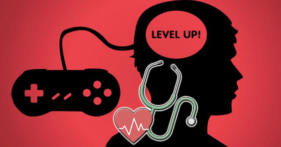
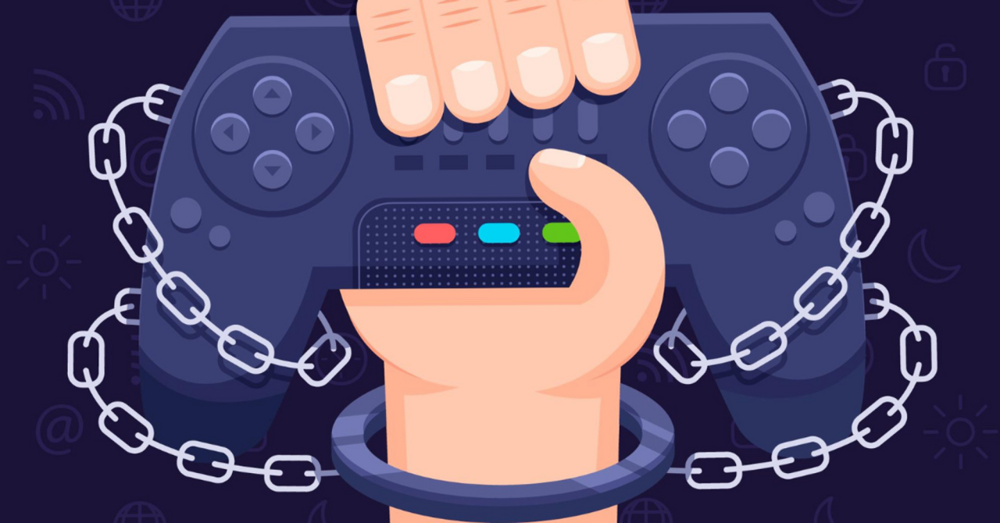

Veel raken verslaafd een en spel op zich, terwijl anderen verslaafd raken en het gevoel van winnen.
Hierdoor verwaarlozen veel verslaafden hun basisbehoeften zoals eten en slapen, wat leidt tot gezondheidsproblemen en sociale problemen.
Een gameverslaafde heeft (bijna) geen aandacht meer voor persoonlijke contacten zowel op school, thuis of op het werk.
Hierdoor raakt een verslaafde vaak sociaal geïsoleerd.
Daarnaast gaan veel verslaafden vaak ook alcohol of drugs gebruiken om hun sociale problemen te onderdrukken of om langer door te kunnen gaan online.
Gameverslaving komt met name voor bij jongeren onder de 25 jaar.
Bij deze deelvraag behandelen we de effecten van obsessief gamen.
Op korte termijn zijn de meeste gevolgen van gamen voornamelijk fysieke pijn in je vingers, handen, polsen en armen van de controller of het toetsenbord en de muis.
Nek en schouderklachten van het voorovergebogen of ingezakte postuur.
Vermoeide en droge ogen van continu naar een scherm kijken en moeite met in slaap vallen.
Gamen kan erg meeslepend en absorberend zijn.
Het grootste verschil tussen een anderhalf uur gamen en een film kijken is dat je tijdens het gamen zelf keuzes maakt en actief bezig bent.
Het absorberende effect van gamen kan handig zijn voor het vertellen van een verhaal waarin de speler zich bijgetrokken voelt omdat de speler zich beter met het verhaal kunt meeleven, maar dit kan er ook tot leiden dat als je te veel speelt dat het psychologisch effect op je heeft.
Op lange termijn zijn de gevolgen van obsessief gamen dus bijvoorbeeld sociale problemen vanwege een gebrek aan sociaal contact, isolatie en eenzaamheid omdat je te veel tijd binnen besteedt en angststoornissen of depressie wat ook door weinig sociaal contact kunt opdragen.
Ook kan het leiden tot overgewicht vanwege een gebrek aan sport, of kan te veel gamen invloed hebben op je cognitief vermogen, wat leidt tot een slechte impulscontrole.
Dit komt vanwege een psychologisch effect waarin je na een periode van veel keuzes maken mentaal vermoeid wordt, en je minder goed kunt nadenken over de keuzes die je maakt.

Bij een gameverslaving spreek je dus vaak van:
• Fysieke klachten (rugpijn, geïrriteerde ogen of RSI)
• Afspraken niet nakomen
• Bijna geen sociale contacten buiten de online wereld
• Verstoord dag-nachtritme
• Slecht eten(spatroon)
• Slechte persoonlijke hygiëne
Deze gevolgen kunnen ook invloed hebben op je sociale leven.
Als je te weinig slaapt ben je prikkelbaar en heb je nauwelijks energie om aan vriendschappen en relaties te besteden.
Doordat je niet de sociale vaardigheden opbouwt in je tienerjaren heb je op latere leeftijd minder goede sociale vaardigheden.
Wat het alleen maar moeilijker maakt om sociale vaardigheden op latere leeftijd te ontwikkelen.
Hierdoor wordt het nog aantrekkelijker om binnen te blijven en jezelf te isoleren, en dus door te gaan met gamen in plaats van sociaal contact op te zoeken.


Er zijn dus ook zijn onzichtbare tekens:
• Somberheid
• Depressie
• Angst
• Snel geïrriteerd als er wordt gestoord tijdens gamen
• Geen goede onderscheid kunnen maken tussen echte en online wereld
• Lastig vinden om af te spreken in niet online omgeving